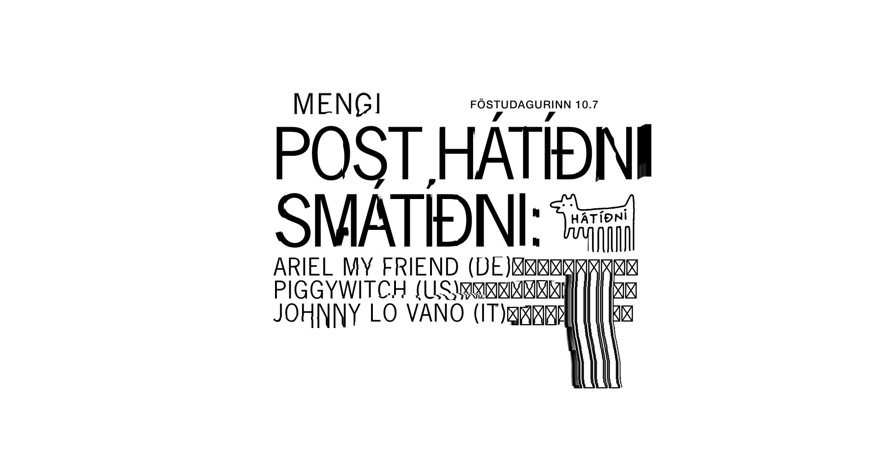
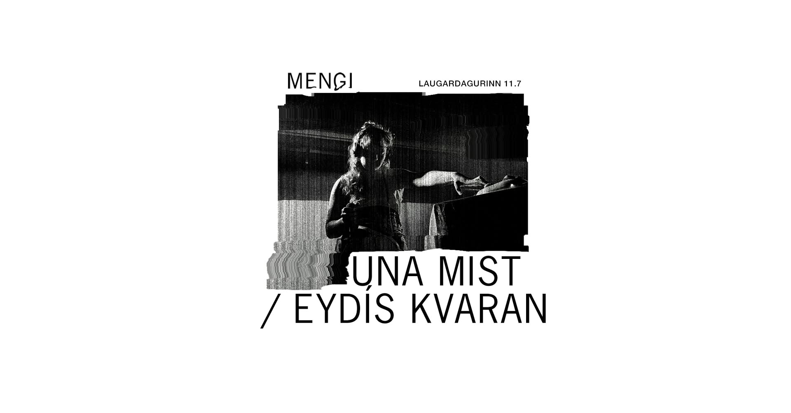
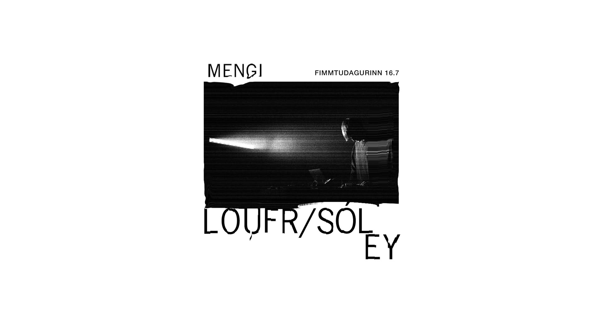
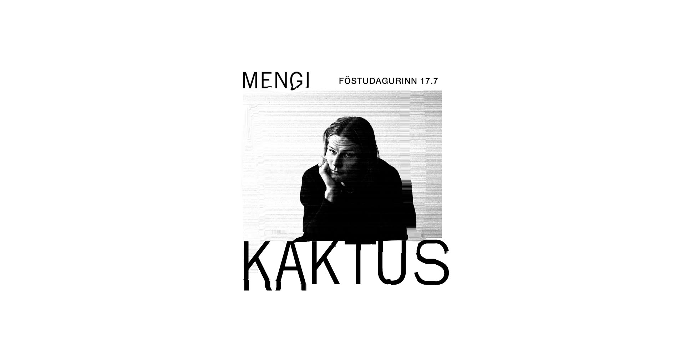
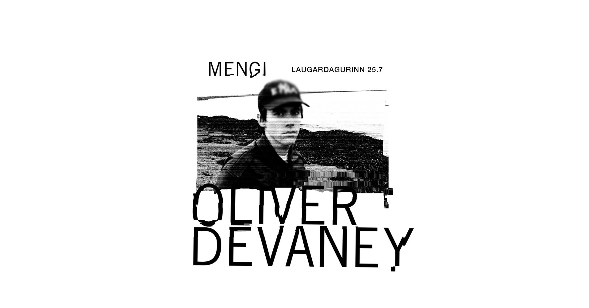
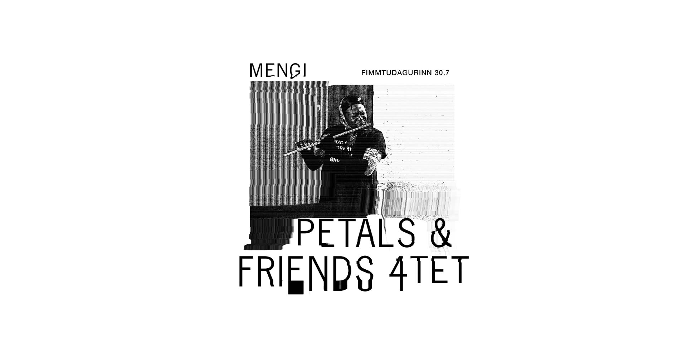
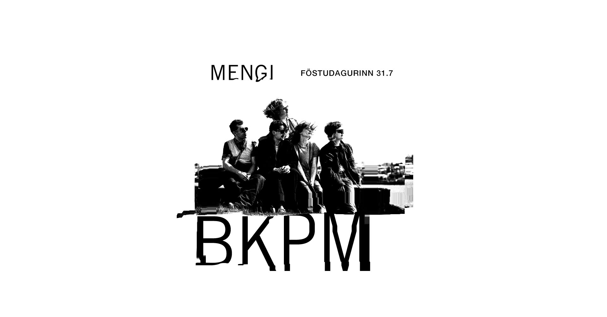
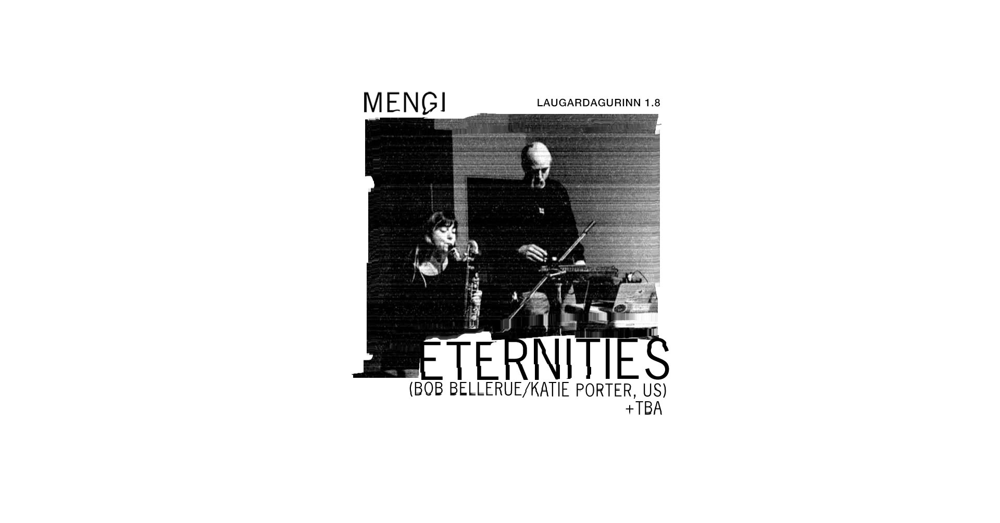

Upcoming Events

FRI 10.07 POST HÁTÍÐNI SMÁTÍÐNI
Tickets Friday, July 11th POST HÁTÍÐNI SMÁTÍÐNI: ARIEL MY FRIEND (DE) PIGGYWITCH (US) JOHNNY LO VANO (IT) doors 19:00 / show 19:30!!!!!!!!!!!!!!!!!! 2500kr / pay what u can Ariel My Friend is an independent weirdo, musician and multimedia artist. His performance is a borderline-overwhelming multimedia experience combining his psychedelic art-pop-rock music and his surrealistic video creations, creating an exciting little world where everyone is welcome to open their minds and dream fearlessly. piggywitch is a pop/folk project by alaina bush, a writer and musician who splits her time between boston and montreal. Johnny lo vano is an Italian musician/songwriter/poet?? Mainly active in the 6-piece indie/art-rock/post-punk band Tanz Akademie. The band has a new album coming between the fall and winter that they made in collaboration with Bjarni Daníel of Supersport! He very much likes the physalis fruit. He’s currently thinking about which songs to play on July 10th

SAT 11.07 Una Mist / Eydís Kvaran
Tickets Saturday, July 11th UNA MIST / EYDÍS KVARAN doors 19:30 / show 20:00 2500kr / pay what u can IS: Una Mist er listakona frá Reykjavík. Hún býr til tilraunakennda og tilfinningaríka popp tónlist. Einnig hannar hún og byggir sín eigin MIDI stjórnborð úr leir og skeljum sem hún notar til að flytja tónlistina sína á sviði. Eydís Kvaran er tónsmiður, söngkona og strengjaleikari búsett í Reykjavík. Með spuna sem megin nálgun í tónsmíðum sínum og sögugerð, nýtir Eydís sér strengjahljóðfæri til þess að byggja á frásagnir sem og tengsl við aðra miðla (kvikmyndir, dans, leikhús). Eydís er meðlimur hljómsveitanna Ólafur Kram og Turturi sem lagasmiður, gítarleikari og söngkona. EN: Una Mist is an artist from Reykjavík. She creates playful and emotional pop music using experimental sound-design techniques. She also designs and builds her own ceramic seashell MIDI controllers that she uses to perform on stage. Eydís Kvaran is a composer, singer and string instrumentalist based in Reykjavík, Iceland. With an improvisational approach to her compositions and experimental narrative, Eydís uses string instruments to expand the method of musical storytelling and stretch its boundaries with relation to other art mediums (film, dance, theatre, ect). On top of her own musical projects, Eydís is a member of the bands Ólafur Kram and Turturi, where she is a songwriter, guitarist and vocalist.

THU 16.07 LOUFR / Sól Ey
Tickets Thursday, July 16th LOUFR / SÓL EY doors 19:30 / show 20:00 2500kr / pay what u can LOUFR In his sonic practice, he explores the field of sound design, using it as a means of searching for timbres and structures that evoke a strong subjective physical and emotional response. The extra-musical themes running through his work revolve around global change. His music has been presented at festivals including Musica Electronica Nova, Musica Polonica Nova, and GAIDA Festival. He has collaborated with ensembles such as Black Page Orchestra, Ensemble Adapter, Garage Ensemble, and Ensemble Kompopolex. His works have been presented at venues including the National Forum of Music (Wrocław), Musikverein Wien, and the Nacionalinė dailės galerija (Vilnius). He is also the creator of the solo project LOUFR, through which he presents his original electronic music. Under this alias, he has released three solo albums: Vegetable Synthesis (Howard Records), Isolated Point (Digital in Berlin), and FEARS (Pointless Geometry). SÓL EY Sól Ey is an Icelandic transdisciplinary artist based between Copenhagen and The Hague. Working across performance, interactive installation, and instrument design, she creates immersive environments that combine sound, movement, light, space, and the body. Using DIY electronics, sensors, and self-built wearable instruments, her practice explores how technology can extend, control and choreograph behaviour, perception, and social relations. Her solo performances centre on Hreyfð, a wearable electronic instrument that transforms movement into sound through audio feedback. Developed through decade-long research on embodied electronic music performance, Hreyfð treats the body as both instrument and interface. Drawing on Donna Haraway’s concept of the cyborg, the work explores how the technology we wear and use continuously controls how we move, behave and interact with our surroundings.

FRI 17.07 Kaktus Einarsson
Tickets Friday, July 17th KAKTUS EINARSSON doors 19:30 / show 20:00 2500kr / pay what u can Kaktus Einarsson is an Icelandic musician, songwriter, and producer whose work moves fluidly between indie pop, electronic music, and experimental composition. Born and raised in Reykjavík, he began performing professionally at just 10 years old as part of experimental electronic outfit Ghostigital. Einarsson first gained international recognition as a founding member and frontman of Icelandic post-punk band Fufanu, whose sharp, atmospheric sound took them from the Reykjavík underground to major festival bills across Europe. With Fufanu, he opened hometown shows for Radiohead and Red Hot Chili Peppers, supported Blur at Hyde Park, and performed at festivals including Primavera Sound, Rock Werchter, Musilac, and Down The Rabbit Hole. Launching his solo career in 2021, Einarsson released debut album ‘Kick The Ladder’, a genre-blurring record combining classical instrumentation, electronic textures, and adventurous pop songwriting. The album established his solo voice and was later remixed by artists including JFDR, Modular Project and Brandt Brauer Frick. His 2024 album ‘Lobster Coda’ featured collaborations with Damon Albarn and Nanna of Of Monsters and Men, continuing his instinct for balancing melodic songwriting with inventive production and genre-fluid arrangements. Kaktus returns with third album ‘Factoid Happiness’, out September 18 th on One Little Independent Records. Featuring collaborators including John Grant, RAKEL, Thibault Gomez and Jessica Winter, the record explores themes of identity, technology, family, political division and the increasingly manufactured nature of modern happiness. Known for bringing both sophistication and unpredictability to his work, Kaktus Einarsson has built a career bridging underground experimentation and refined pop craftsmanship, establishing himself as one of Iceland’s most distinctive contemporary artists.

SAT 25.07 Oliver Devaney
Tickets Saturday, July 25th OLIVER DEVANEY doors 19:30 / show 20:00 2500kr / pay what u can Oliver Devaney is a musician and artist based in both Reykjavík and New York City. Having collaborated with a wide range of bands and artists over the years including Xiupill, Charliedwarf, and Sameheads, he is now currently putting the finishing touches on his debut solo album. He will perform this new material at Mengi on the 25th of July.

THU 30.07 Petals & Friends Quartet
Tickets Thursday, July 30th PETALS & FRIENDS QUARTET doors 19:30 / show 20:00 2500kr / pay what u can Magnús Tryvgason Eliassen - drum kit Sólrún Mjöll - drum kit Birgir Steinn Theodórsonn - double bass petals - reeds, flutes, violin, piano, small percussion Sólrún & Magnús are dear friends & my favorite drummers in town ! I have admired Birgir’s melodic playing & his anchoring lines but we haven’t had an opportunity to play together yet. this will be the first time we play as a group. my experience is that this music frees us in the sense that it opens up all kinds of feelings & emotions that leave us undone (heart, body & mind dancing) in the most beautiful ways. & so, we are going to try to play as earnestly as we can until we feel some sort of rupture, some sort of magic, uplift & release.

FRI 31.07 BKPM
Tickets Friday, July 31st BKPM doors 19:30 / show 20:00 2500kr / PAY WHAT U CAN ‘BKPM (big kinky polyamorous marriage) is an experimental band fusing together sounds and styles from krautrock as well as old and new post punk. After bursting onto the scene in 2023 their sound evoked comparisons to bands like Talking Heads and Can. In august the band released their debut album “Bíddu Ha?”’

SAT 01.08 Bob Bellerue/Katie Porter + TBA
Tickets Saturday, August 1st ETERNITIES (Bob Bellerue & Katie Porter, USA) + TBA doors 19:30 / show 20:00 3000kr / pay what u can Eternities is an intuitive collaboration between bass clarinetist Katie Porter and sound artist Bob Bellerue. Our work is inspired by deep presence, resonant feedback, melodic drone, and overtone magic, in the fluid realm between intention and indeterminacy. We use harmonic tones from wind instruments played within feedback systems to create multidimensional spectral drone. ------ BOB BELLERUE is a sound artist, experimental musician, sound/video curator, and A/V technician based in Ridgewood NY. Since 1987 he has been involved in a wide range of sonic activities – experimental music, sound art, noise, junk metal percussion ensembles, hippie punk bands, soundtracks for dance/ theater/ video/ performance art, and sound / video installations. Bob’s electronic sound work is focused on resonant feedback systems, using amplified instruments, objects, recordings, and spaces, in combination with electronics and software written in the Supercollider audio synthesis programming language. Bob's work has been presented by The Kitchen, Issue Project Room, MOMA/PS1, Pioneer Works, Experimental Intermedia, Cafe Oto, Fylkingen, EMS, Non-Event, High Zero Festival, the Yogyakarta Gamelan Festival, Centre de Cultura Contemporanea de Barcelona, LUFF Festival, Akouphene Festival, Sonic Circuits Festival, Living Arts of Tulsa's New Genre Festival, CEAIT Festival, Ende Tymes Festival, Denver Noise Festival, Olympia Experimental Music Festival, PDX Noise Festival, Cave12, Diapason Sound Gallery, Roulette, Boulder Museum of Contemporary Art, Elastic Arts, Here Art Center, Radio Epsilonia (Paris), WFMU, WKCR, WNYU, KFJC, KXLU, East Village Radio, Oberlin College, NYU, the Art Institute of Chicago, Stanford University, The New School, UCSD, and UCLA. Bob’s discography includes dozens of releases on Elevator Bath Records, iDeal Recordings, Banned Productions, P-Tapes, RRR Records, Flag Day Recordings, Love Earth Music, Harmonic Ooze, Fabrica, Prison Tatt Records, Los Discos Enfantasmes, Zelphabet, Peyote Tapes, No Rent Records, Important Records, and his own Anarchymoon Recordings and Sleepy Hollow Editions. Bob has curated and produced events for the Che Cafe (1987-91), Naropa Institute (1992-95), Highways Performance Space (1999-2001), Beyond Baroque (2001-5), CalArts (2001-3), Il Corral (2005-7), Porrhouse (2007-8), The Kitchen (2008-11), Issue Project Room (2011-2022), Silent Barn (2011-18), Secret Project Robot (2012-19), Knockdown Center (2014-15), MOMA (2015-16), H0l0 (2016-2021), and Pioneerworks (2017-present). His festival Ende Tymes was founded in 2011, and the 16th iteration was 16-18 April 2026. ----- KATIE PORTER is a clarinetist and curator specializing in experimental music. Passionate about creating musical communities, she co-founded the venue Listen/Space (Brooklyn) and curates the Listen/Space Commissions, responsible for 46 new works for mixed chamber group. She also co-directs the biennial VU Symposium for experimental, improvised and electronic music (Park City, Utah) and is working on a giant multi-year project of experimental works for solo clarinet at Nancy Holt’s Sun Tunnels, a land artwork in remote northern Utah. She has performed solos or chamber music at Roulette (BK), Issue Project Room (BK), The Kitchen (NYC), The Stone (NYC), C4NM (San Francisco), Willow Place Auditorium (BK), Monkeytown (BK), the Indexical Series (Santa Cruz), Dogstar (LA), Experimental Intermedia (NYC), Fridman Gallery (NYC), American Mavericks Festival (NYC), Green Umbrella Series (LA), SOUND at the Schindler House (LA), Human Resources (LA), BLIM (Vancouver), NOVA (SLC), UMOCA, UMFA, Contemporary Art Center Cincinnati, Lincoln Center (NYC), The Ontologic-Hysteric Theater (NYC), the Liquid Music Series (St. Paul), Centre Acanthes (France), Scelciana (Italy), Moma PS1 (NYC), Ostrava Days (Czech Rep), KM28 (Berlin), St Petersburg Art Space (Berlin), Cornell University, Columbia University, Duke University, Kenyon College, the University of Utah, with ensembles such as Wild Up! (LA), Koan Quartet (LA), Southland Ensemble (LA), Studio Dan (Vienna), Daniel Goode’s Flexible Orchestra (NYC), LOLO (Love of Life Orchestra) (NYC) and premiered works by John Luther Adams, Jason Ajemian, Carolyn Chen, Laura Cetilia, André Cormier, Nomi Epstein, Jürg Frey, Jennie Gottschalk, Anne Guthrie, Brian Harnetty, John Hastings, Sarah Hennies, Yvette Janine Jackson, Dan Joseph, Travis Just, Mike Kelley, Michael Pisaro, Larry Polansky, Stephanie Richards, Morris Rosenzweig, Arthur Russell, Craig Shepard, Teodora Stepančić, Colin Tucker, James Tenney, Maayan Tsadka, and Christian Wolff, among many others. Her duo, Red Desert Ensemble, called “a finely poised musical partnership”- THE WIRE, “not superficial ambient music”- TEMPO and a “particularly fascinating soundscape”- NIEUWE NOTEN, can be heard on Phill Niblock’s XI label (NY), Edition Wandelweiser Records, The Essential Indexical, Infrequent Seams (NY) and were 2019/2020 Artists-in-Residence at Westminster College. Current collaborations include A Quartet or Two Duos with James Ilgenfritz, Teerapat Parnmongkol and Lucie Vítková in NYC, the duo Malosma with flutist Christine Tavolacci in LA and Phase to Phase with bass clarinetist Lucio Capece (Berlin) which was released in July 2022 on the Japanese label FTARRI. Katie Porter bass clarinet https://fromkp.com Bob Bellerue feedback https://bobbellerue.net